Filter
Last modified: May 17, 2022
Contents
Convolution
convolve
Image [GreyScale|Grey16|Float|RGB|Complex] convolve (Image [Float] kernel, Choice [avoid|clip|repeat|reflect|wrap] border_treatment = clip)
| Operates on: | Image [GreyScale|Grey16|Float|RGB|Complex] |
|---|---|
| Returns: | Image [GreyScale|Grey16|Float|RGB|Complex] |
| Category: | Filter/Convolution |
| Defined in: | convolution.py |
| Author: | Michael Droettboom (With code from VIGRA by Ullrich Köthe) |
Convolves an image with a given kernel.
Uses code from the Vigra library (Copyright 1998-2007 by Ullrich Köthe).
- kernel
- A kernel for the convolution. The kernel may either be a FloatImage or a nested Python list of floats.
- border_treatment
Specifies how to treat the borders of the image. Must be one of the following:
BORDER_TREATMENT_AVOID (0)
do not operate on a pixel where the kernel does not fit in the image
BORDER_TREATMENT_CLIP (1)
clip kernel at image border. The kernel entries are renormalized so that the total kernel sum is not changed (this is only useful if the kernel is >= 0 everywhere).
BORDER_TREATMENT_REPEAT (2)
repeat the nearest valid pixel
BORDER_TREATMENT_REFLECT (3)
reflect image at last row/column
BORDER_TREATMENT_WRAP (4)
wrap image around (periodic boundary conditions)
Example usage:
# Using a custom kernel
img2 = image.convolve([[0.125, 0.0, -0.125],
[0.25 , 0.0, -0.25 ],
[0.125, 0.0, -0.125]])
# Using one of the included kernel generators
img2 = image.convolve(GaussianKernel(3.0))
convolve_x
Image [GreyScale|Grey16|Float|RGB|Complex] convolve_x (Image [Float] kernel_x, Choice [avoid|clip|repeat|reflect|wrap] border_treatment = clip)
| Operates on: | Image [GreyScale|Grey16|Float|RGB|Complex] |
|---|---|
| Returns: | Image [GreyScale|Grey16|Float|RGB|Complex] |
| Category: | Filter/Convolution |
| Defined in: | convolution.py |
| Author: | Michael Droettboom (With code from VIGRA by Ullrich Köthe) |
Convolves an image in the X directions with a 1D kernel. This is equivalent to what the Vigra library calls "Separable Convolution".
Uses code from the Vigra library (Copyright 1998-2007 by Ullrich Köthe).
- kernel_x
- A kernel for the convolution in the x direction. The kernel may either be a FloatImage or a nested Python list of floats. It must consist of only a single row.
- border_treatment
- Specifies how to treat the borders of the image. See convolve for information about border_treatment values.
convolve_xy
Image [GreyScale|Grey16|Float|RGB|Complex] convolve_xy (Image [Float] kernel_x, Image [Float] kernel_y, Choice [avoid|clip|repeat|reflect|wrap] border_treatment = clip)
| Operates on: | Image [GreyScale|Grey16|Float|RGB|Complex] |
|---|---|
| Returns: | Image [GreyScale|Grey16|Float|RGB|Complex] |
| Category: | Filter/Convolution |
| Defined in: | convolution.py |
| Author: | Michael Droettboom (With code from VIGRA by Ullrich Köthe) |
Convolves an image in both X and Y directions with 1D kernels. This is equivalent to what the Vigra library calls "Separable Convolution".
Uses code from the Vigra library (Copyright 1998-2007 by Ullrich Köthe).
- kernel_y
- A kernel for the convolution in the y direction. The kernel may either be a FloatImage or a nested Python list of floats.
- kernel_x
- A kernel for the convolution in the x direction. The kernel may either be a FloatImage or a nested Python list of floats. If kernel_x is omitted, kernel_y will be used in the x direction.
- border_treatment
- Specifies how to treat the borders of the image. See convolve for information about border_treatment values.
convolve_y
Image [GreyScale|Grey16|Float|RGB|Complex] convolve_y (Image [Float] kernel_y, Choice [avoid|clip|repeat|reflect|wrap] border_treatment = clip)
| Operates on: | Image [GreyScale|Grey16|Float|RGB|Complex] |
|---|---|
| Returns: | Image [GreyScale|Grey16|Float|RGB|Complex] |
| Category: | Filter/Convolution |
| Defined in: | convolution.py |
| Author: | Michael Droettboom (With code from VIGRA by Ullrich Köthe) |
Convolves an image in the X directions with a 1D kernel. This is equivalent to what the Vigra library calls "Separable Convolution".
Uses code from the Vigra library (Copyright 1998-2007 by Ullrich Köthe).
- kernel_y
- A kernel for the convolution in the x direction. The kernel may either be a FloatImage or a nested Python list of floats. It must consist of only a single row.
- border_treatment
- Specifies how to treat the borders of the image. See convolve for information about border_treatment values.
ConvolutionKernels
AveragingKernel
Image [Float] AveragingKernel (int radius = 3)
| Returns: | Image [Float] |
|---|---|
| Category: | Filter/ConvolutionKernels |
| Defined in: | convolution.py |
| Author: | Michael Droettboom (With code from VIGRA by Ullrich Köthe) |
Creates an Averaging filter kernel for use with separable convolution. The window size is (2*radius+1) * (2*radius+1).
- radius
- The radius of the kernel.
BinomialKernel
Image [Float] BinomialKernel (int radius = 3)
| Returns: | Image [Float] |
|---|---|
| Category: | Filter/ConvolutionKernels |
| Defined in: | convolution.py |
| Author: | Michael Droettboom (With code from VIGRA by Ullrich Köthe) |
Creates a binomial filter kernel for use with separable convolution of a given radius.
- radius
- The radius of the kernel.
GaussianDerivativeKernel
Image [Float] GaussianDerivativeKernel (float standard_deviation = 1.00, int order = 1)
| Returns: | Image [Float] |
|---|---|
| Category: | Filter/ConvolutionKernels |
| Defined in: | convolution.py |
| Author: | Michael Droettboom (With code from VIGRA by Ullrich Köthe) |
Init as a Gaussian derivative of order 'order'. The radius of the kernel is always 3*std_dev.
- standard_deviation
- The standard deviation of the Gaussian kernel.
- order
- The order of the Gaussian kernel.
GaussianKernel
Image [Float] GaussianKernel (float standard_deviation = 1.00)
| Returns: | Image [Float] |
|---|---|
| Category: | Filter/ConvolutionKernels |
| Defined in: | convolution.py |
| Author: | Michael Droettboom (With code from VIGRA by Ullrich Köthe) |
Init as a Gaussian function. The radius of the kernel is always 3*standard_deviation.
- standard_deviation
- The standard deviation of the Gaussian kernel.
SimpleSharpeningKernel
Image [Float] SimpleSharpeningKernel (float sharpening_factor = 0.50)
| Returns: | Image [Float] |
|---|---|
| Category: | Filter/ConvolutionKernels |
| Defined in: | convolution.py |
| Author: | Michael Droettboom (With code from VIGRA by Ullrich Köthe) |
Creates a kernel for simple sharpening.
SymmetricGradientKernel
Image [Float] SymmetricGradientKernel ()
| Returns: | Image [Float] |
|---|---|
| Category: | Filter/ConvolutionKernels |
| Defined in: | convolution.py |
| Author: | Michael Droettboom (With code from VIGRA by Ullrich Köthe) |
Init as a symmetric gradient filter of the form [ 0.5, 0.0, -0.5]
create_gabor_filter
Image [Float] create_gabor_filter (float orientation = 45.00, float frequency = 0.38, int direction = 5)
| Operates on: | Image [GreyScale] |
|---|---|
| Returns: | Image [Float] |
| Category: | Filter |
| Defined in: | misc_filters.py |
| Author: | Ullrich Köthe (wrapped from VIGRA by Uma Kompella) |
Computes the convolution of an image with a two dimensional Gabor function. The result is returned as a float image.
The orientation is given in radians, the other parameters are the center frequency (for example 0.375 or smaller) and the two angular and radial sigmas of the gabor filter.
The energy of the filter is explicitly normalized to 1.0.
Example 1: create_gabor_filter()
 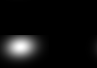
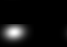
gaussian_gradient
[object] gaussian_gradient (float scale = 0.50)
| Operates on: | Image [GreyScale|Grey16|Float|RGB|Complex] |
|---|---|
| Returns: | [object] |
| Category: | Filter |
| Defined in: | convolution.py |
| Author: | Michael Droettboom (With code from VIGRA by Ullrich Köthe) |
Calculate the gradient vector by means of a 1st derivatives of Gaussian filter.
scale
Returns a tuple of (x_gradient, y_gradient).
Example 1: gaussian_gradient(1.0)
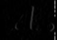 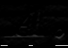
Example 2: gaussian_gradient(1.0)

Example 3: gaussian_gradient(1.0)
gaussian_smoothing
Image [GreyScale|Grey16|Float|RGB|Complex] gaussian_smoothing (float standard_deviation = 1.00)
| Operates on: | Image [GreyScale|Grey16|Float|RGB|Complex] |
|---|---|
| Returns: | Image [GreyScale|Grey16|Float|RGB|Complex] |
| Category: | Filter |
| Defined in: | convolution.py |
| Author: | Michael Droettboom (With code from VIGRA by Ullrich Köthe) |
Performs gaussian smoothing on an image.
- standard_deviation
- The standard deviation of the Gaussian kernel.
Example 1: gaussian_smoothing(1.0)
Example 2: gaussian_smoothing(3.0)
Example 3: gaussian_smoothing(1.0)
hessian_matrix_of_gaussian
[object] hessian_matrix_of_gaussian (float scale = 0.50)
| Operates on: | Image [GreyScale|Grey16|Float] |
|---|---|
| Returns: | [object] |
| Category: | Filter |
| Defined in: | convolution.py |
| Author: | Michael Droettboom (With code from VIGRA by Ullrich Köthe) |
Filter image with the 2nd derivatives of the Gaussian at the given scale to get the Hessian matrix.
scale
Example 1: hessian_matrix_of_gaussian(1.0)
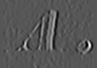
kfill
Image [OneBit] kfill (int k = 3, int iterations = 1)
| Operates on: | Image [OneBit] |
|---|---|
| Returns: | Image [OneBit] |
| Category: | Filter |
| Defined in: | misc_filters.py |
| Author: | Oliver Christen |
Removes salt and pepper noise in onebit images by applying the kfill filter iterations times. Should before iteration times a run of the kfill filter not change a single pixel, the iteration is stopped beforehand.
In contrast to a rank or mean filter, kfill is designed in such a way that it does not merge non touching connected components. To this end, the border of the k times k mask is scanned for black pixels and the center is not filled when this would connect disjoint pixels on the border. A detailed description of the algorithm can be found in
M. Seul, L. O'Gorman, M.J. Sammon: Practical Algorithms for Image Analysis. Cambridge University Press, 2000
The present implementation does not use code from the book, but has been written from scratch.
kfill_modified
Image [OneBit] kfill_modified (int k = 3)
| Operates on: | Image [OneBit] |
|---|---|
| Returns: | Image [OneBit] |
| Category: | Filter |
| Defined in: | misc_filters.py |
| Author: | Oliver Christen |
Removes salt and pepper noise in onebit images by applying a modified version of the kfill filter proposed in the following reference:
K.Chinnasarn, Y.Rangsanseri, P.Thitimajshima: Removing Salt-and-Pepper Noise in Text/Graphics Images. Proceedings of The Asia-Pacific Conference on Circuits and Systems (APCCAS'98), pp. 459-462, 1998
For k = 3, this algorithm is identical with the original kfill algorithm. For larger k however, it fills the window core also when not all pixels are of the same value. It should be noted that in this case, the modified version does not take care of connectivity. In other words, it can result in joining previously disconnected connected components, similar to a morphological closing operation, while at the same time small black speckles are removed.
laplacian_of_gaussian
Image [GreyScale|Grey16|Float] laplacian_of_gaussian (float scale = 0.50)
| Operates on: | Image [GreyScale|Grey16|Float] |
|---|---|
| Returns: | Image [GreyScale|Grey16|Float] |
| Category: | Filter |
| Defined in: | convolution.py |
| Author: | Michael Droettboom (With code from VIGRA by Ullrich Köthe) |
Filter image with the Laplacian of Gaussian operator at the given scale.
scale
Example 1: laplacian_of_gaussian(1.0)
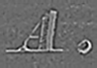
mean
Image [OneBit|GreyScale|Grey16|Float] mean (int k = 3, Choice [padwhite|reflect] border_treatment = reflect)
| Operates on: | Image [OneBit|GreyScale|Grey16|Float] |
|---|---|
| Returns: | Image [OneBit|GreyScale|Grey16|Float] |
| Category: | Filter |
| Defined in: | misc_filters.py |
| Author: | David Kolanus |
Within each k times k window, set the center pixel to the mean value of all pixels.
k is the window size (must be odd), and border_treatment can be 0 ('padwhite'), which sets window pixels outside the image to white, or 1 ('reflect'), for reflecting boundary conditions.
Example 1: mean()
min_max_filter
Image [OneBit|GreyScale|Grey16|Float] min_max_filter (int k = 3, Choice [min|max] filter = min, int k_vertical = 0)
| Operates on: | Image [OneBit|GreyScale|Grey16|Float] |
|---|---|
| Returns: | Image [OneBit|GreyScale|Grey16|Float] |
| Category: | Filter |
| Defined in: | misc_filters.py |
| Author: | David Kolanus |
Within each k times k window, set the center pixel to the minimum or maximum value of all pixels inside the window.
k is the window size (must be odd) and filter is the filter type (0 for min, 1 for max). When k_vertical is nonzero, the vertical size of the window is set to k_vertical instead of k.
This function does the same as rank(1,k,border_treatment=1), but is much faster because the runtime of min_max_filter is constant in the window size. The same algorithm has been developed independently by van Herk and Gil and Werman. See
M. van Herk: A fast algorithm for local minimum and maximum filters on rectangular and octagonal kernels. Pattern Recognition Letters 13, pp. 517-521, 1992
J. Gil, M. Werman: Computing 2-D min, median, and max filters. IEEE Transactions on Pattern Analysis and Machine Intelligence 15, pp. 504-507, 1993
Example 1: min_max_filter()
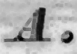
rank
Image [OneBit|GreyScale|Grey16|Float] rank (int rank, int k = 3, Choice [padwhite|reflect] border_treatment = reflect)
| Operates on: | Image [OneBit|GreyScale|Grey16|Float] |
|---|---|
| Returns: | Image [OneBit|GreyScale|Grey16|Float] |
| Category: | Filter |
| Defined in: | misc_filters.py |
| Author: | Christoph Dalitz and David Kolanus |
Within each k times k window, set the center pixel to the r-th ranked value.
Note that for Onebit images, actually rank(k*k - r + 1) is computed instead of rank(r). This has the effect that you do not need to worry whether your image is a greyscale or onebit image: in all cases low values for r will darken the image and high values will light it up.
- rank (1, 2, ..., k * k)
- The rank of the windows pixels to select for the center. (k*k+1)/2 is equivalent to the median.
- k (3, 5 ,7, ...)
- The window size (must be odd).
- border_treatment (0, 1)
- When 0 ('padwhite'), window pixels outside the image are set to white. When 1 ('reflect'), reflecting boundary conditions are used.
Example 1: rank(2)
Example 2: rank(5)
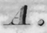
Example 3: rank(8)
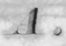
simple_sharpen
Image [GreyScale|Grey16|Float|RGB|Complex] simple_sharpen (float sharpening_factor = 0.50)
| Operates on: | Image [GreyScale|Grey16|Float|RGB|Complex] |
|---|---|
| Returns: | Image [GreyScale|Grey16|Float|RGB|Complex] |
| Category: | Filter |
| Defined in: | convolution.py |
| Author: | Michael Droettboom (With code from VIGRA by Ullrich Köthe) |
Perform simple sharpening.
- sharpening_factor
- The amount of sharpening to perform.
Example 1: simple_sharpen(1.0)
Example 2: simple_sharpen(3.0)

sobel_edge_detection
Image [GreyScale|Grey16|Float|RGB|Complex] sobel_edge_detection ()
| Operates on: | Image [GreyScale|Grey16|Float|RGB|Complex] |
|---|---|
| Returns: | Image [GreyScale|Grey16|Float|RGB|Complex] |
| Category: | Filter |
| Defined in: | convolution.py |
| Author: | Michael Droettboom (With code from VIGRA by Ullrich Köthe) |
Performs simple Sobel edge detection on the image.
Example 1: sobel_edge_detection(1.0)
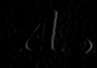
Example 2: sobel_edge_detection(3.0)
wiener_filter
Image [GreyScale|Grey16|Float] wiener_filter (int region size = 5, float noise variance = -1.00)
| Operates on: | Image [GreyScale|Grey16|Float] |
|---|---|
| Returns: | Image [GreyScale|Grey16|Float] |
| Category: | Filter |
| Defined in: | binarization.py |
| Author: | John Ashley Burgoyne and Ichiro Fujinaga |
Adaptive Wiener filter for de-noising.
See:
J. Lim. 2001. Two-Dimensional Signal Processing. Englewood Cliffs: Prentice Hall.
- region_size
- The size of the region within which to calculate the filter coefficients.
- noise_variance
- Variance of the noise in the image. If negative, estimated automatically as the median of local variances.
Example 1: wiener_filter()
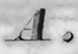
Example 2: wiener_filter()

Example 3: wiener_filter()